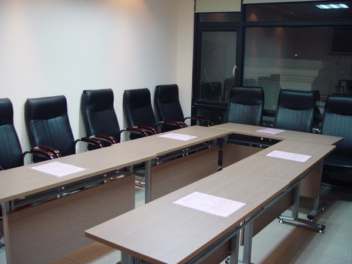
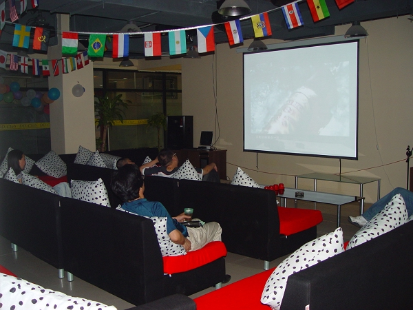
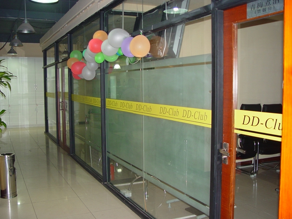

南通五子棋核心组成员的讨论，结果如下：
1、南通五子棋每周六下午2：00起在南通市鼎典益智俱乐部进行五子棋交流活动
2、每次活动，南通五子棋核心组成员不少于两人参加
3、所有来参加五子棋活动的朋友一律免费，且不需要事先报名，直接前往
南通五子棋历次活动：
第一次活动报道：ShowPost.asp?ThreadID=13
第二次活动报道：ShowPost.asp?ThreadID=208
第三次活动报道：ShowPost.asp?ThreadID=331
第四次活动报道：ShowPost.asp?ThreadID=442
第五次活动报道：ShowPost.asp?ThreadID=636
全手工打造,自制的棋盘



棋室，桌子可以随意调整

大厅，可以看看电视聊聊天

多个单间，三五好友可以小聚

小卖部
 一般有MM又不下雨的话俺就去，嘻嘻。
一般有MM又不下雨的话俺就去，嘻嘻。新来的，请多关照。
咱南通居然有五子棋社，意外。
8知道我们有职业段位的高手吗。希望能见到介绍我们南通五子棋水平现状的帖子。
规模越来越大了，可惜俺不是南通的
支持~可饿没有来过南通市,找个时间过来学习学习~嘿嘿